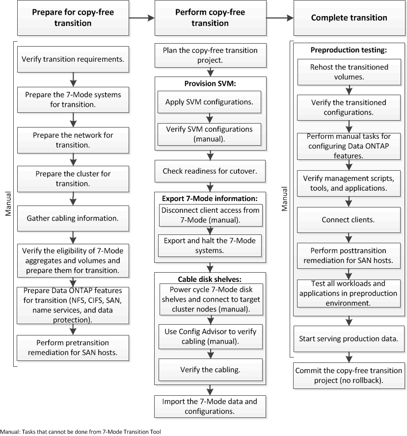

Mappage de commandes pour les administrateurs 7-mode
Mappage de commandes pour les administrateurs 7-mode
La version française est une traduction automatique. La version anglaise prévaut sur la française en cas de divergence.
Transition sans copie au flux de travail
Contributeurs
 Suggérer des modifications
Suggérer des modifications
-
 Un fichier PDF de toute la documentation
Un fichier PDF de toute la documentation
-
Transition basée sur la copie
-
Préparation à la transition basée sur la copie
-
-
La transition sans copie
-
Préparation à la transition sans copie
-
-
La transition des données 7-mode avec SnapMirror
-
Transition et résolution des problèmes liés aux hôtes SAN
-
Plusieurs fichiers PDF
Creating your file...
This may take a few minutes. Thanks for your patience.
Your file is ready
Le workflow de transition sans copie comprend la préparation à la transition, la transition et la fin de la transition. Certaines de ces tâches doivent être effectuées manuellement sur les systèmes 7-mode et le cluster.
